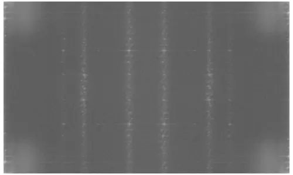
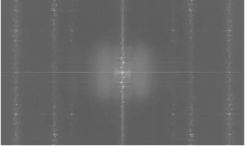

這是學校選修課的功課紀錄，同步發布於 該課程 Blogger
功課要求
- 撰寫傅利葉轉換程式 (Forward Fourier Transform and Inverse Fourier Transform) 將一張圖像轉換至頻域
- 將頻譜大小與相位角度各以灰階256 色圖像方式呈現出
- 呈現還原後圖像
成果
 程式完成後的執行結果
程式完成後的執行結果
開發環境
| OS | Editor | Language | OpenCV |
|---|---|---|---|
| Windows 10 | Visual Studio Code | Python 3.9.16 | OpenCV 4.5.4 |
實作
話說 Copilot 真的好用，這次的作業有一半是他給了我建議我再去查函式定義。
使用的 libraries 如下：
1
2
3
import cv2
import matplotlib.pyplot as plt
import numpy as np
1/ 讀取圖片並顯示
cv2.imread(file_name, cv2.IMREAD_GRAYSCALE) 會以灰階模式讀入一張圖。
1
2
# Read image
original_img = cv2.imread(".\\image3.png", cv2.IMREAD_GRAYSCALE)
再使用 plt 創建一個 2*2 空間的畫布，並以灰階模式顯示，加上 title 和 axis off 讓他更美觀。
1
2
3
4
plt.subplot(2, 2, 1)
plt.imshow(original_img, cmap='gray')
plt.title("Original Image")
plt.axis("off")
2/ 調整圖像大小
DFT 在某些大小的畫布下可以計算得比較快，所以我們透過在圖片的右方與下方插入白色畫布，拓展他的尺寸。
getOptimalDFTSize() 可以幫我們取得 x 軸和 y 軸所要調整的最佳大小。
使用 np.zeros() 創建一個 dft_M * dft_N 大小的白色畫布，在畫布左上角用 original_img 覆蓋。
1
2
3
4
5
6
# get optimal size for dft
dft_M = cv2.getOptimalDFTSize(original_img.shape[0])
dft_N = cv2.getOptimalDFTSize(original_img.shape[1])
# add zero padding
dft_A = np.zeros((dft_M, dft_N), dtype=np.float32)
dft_A[:original_img.shape[0], :original_img.shape[1]] = original_img
3/ 計算 DFT
由於 DFT 結果是複數，包含實部和虛部，所以使用二維 array planes 協助我們儲存。
利用 cv2.dft() 算 DFT 後，再使用 cv2.split() 將實部虛部兩個通道分開。
cv2.magnitude(x, y) 的原理是實部相乘 + 虛部相乘，公式為 $ dst(I) = \sqrt{x(I)^2 + y(I)^2}$ ，再來對它取 log。為什麼是這樣算？這就是傅立葉轉換的數學範疇了，在這裡就不多做自虐。
關於傅立葉小白，推薦 圖解傅立葉分析 ，看完這篇後我終於有點理解頻域在做什麼了。
1
2
3
4
5
6
7
8
# make two channel for dft (real and imaginary)
planes = [dft_A, np.zeros(dft_A.shape, np.float32)]
dft_A = cv2.merge(planes)
cv2.dft(dft_A, dft_A)
cv2.split(dft_A, planes)
#compute the magnitude
magnitude = cv2.magnitude(planes[0], planes[1])
magnitude = np.log(magnitude + 1)
4/ 平移頻譜圖
頻譜圖有時候會需要平移一下，將重點放到圖片中心，好讓人類觀看，例如做完以上步驟後的圖如下：
 亮部集中在四個角落的頻譜圖
但如果把四個角的亮部移到中心，我們會更好觀察，所以剛剛那張圖我們這樣切割：
1
2
| 0 | 1 |
| 2 | 3 |
若要將亮部移動到中心位置，就必須 0、3 互換， 1、2 互換。
這裡我選用了比較原始的方法， numpy 可以使用 ffshift 函式 方便許多。
最後用正規化便於我們顯示灰階圖片。
1
2
3
4
5
6
7
8
9
10
11
12
13
14
15
# shift to center
cx = int(dft_A.shape[1] / 2)
cy = int(dft_A.shape[0] / 2)
q0 = magnitude[0:cy, 0:cx]
q1 = magnitude[0:cy, cx:dft_A.shape[1]]
q2 = magnitude[cy:dft_A.shape[0], 0:cx]
q3 = magnitude[cy:dft_A.shape[0], cx:dft_A.shape[1]]
# swap diagonal quadrants
tmp = np.copy(q0)
magnitude[0:cy, 0:cx] = q3
magnitude[cy:dft_A.shape[0], cx:dft_A.shape[1]] = tmp
tmp = np.copy(q1)
magnitude[0:cy, cx:dft_A.shape[1]] = q2
magnitude[cy:dft_A.shape[0], 0:cx] = tmp
cv2.normalize(magnitude, magnitude, 0, 1, cv2.NORM_MINMAX)
然後使用 plt 顯示圖片。
1
2
3
4
5
# show frequency domain image after shift
plt.subplot(2, 2, 2)
plt.imshow(magnitude, cmap='gray')
plt.title("Frequency Domain Image After Shift")
plt.axis("off")
顯示出來的結果：
 亮部集中於圖片中間的頻譜圖
5/ 相位角度圖
相位角度通常用來描述圖片的輪廓與細節，這裡直接使用 cv2.phase() 來提取相角，再用和上一步一樣的方法進行平移。
1
2
3
4
5
6
7
8
9
10
11
12
13
14
15
16
17
18
19
20
21
22
23
# get phase image
phase = cv2.phase(planes[0], planes[1], angleInDegrees=True)
# shift to center
q0 = phase[0:cy, 0:cx]
q1 = phase[0:cy, cx:dft_A.shape[1]]
q2 = phase[cy:dft_A.shape[0], 0:cx]
q3 = phase[cy:dft_A.shape[0], cx:dft_A.shape[1]]
# swap diagonal phase
tmp = np.copy(q0)
phase[0:cy, 0:cx] = q3
phase[cy:dft_A.shape[0], cx:dft_A.shape[1]] = tmp
tmp = np.copy(q1)
phase[0:cy, cx:dft_A.shape[1]] = q2
phase[cy:dft_A.shape[0], 0:cx] = tmp
cv2.normalize(phase, phase, 0, 1, cv2.NORM_MINMAX)
# convert to 8 bit unsigned integer
phase = phase * 255
phase = phase.astype(np.uint8)
# show phase image
plt.subplot(2, 2, 3)
plt.imshow(phase, cmap='gray')
plt.title("Phase Image")
plt.axis("off")
6/ 還原圖片
最後使用 DFT 得出的 dft_A 來還原圖片，使用 cv2.idft() 做反向的傅立葉轉換， cv2.split() 與 cv2.magnitude() 取得轉換後的影像， normalize 後就能以 unsigned 8 bits 的方式輸出灰階影像。
1
2
3
4
5
6
7
8
9
10
11
12
13
14
15
16
# get inverse dft
cv2.idft(dft_A, dft_A)
cv2.split(dft_A, planes)
# get inverse image
inverse_img = cv2.magnitude(planes[0], planes[1])
# normalize to 0~255
cv2.normalize(inverse_img, inverse_img, 0, 255, cv2.NORM_MINMAX)
# convert to 8 bit unsigned integer
inverse_img = inverse_img.astype(np.uint8)
# show inverse image
plt.subplot(2, 2, 4)
plt.imshow(inverse_img, cmap='gray')
plt.title("Inverse Image")
plt.axis("off")
plt.show()
總結
DFT 能將影像從時域轉至頻域，可以用來找出影像中週期性出現的雜訊。